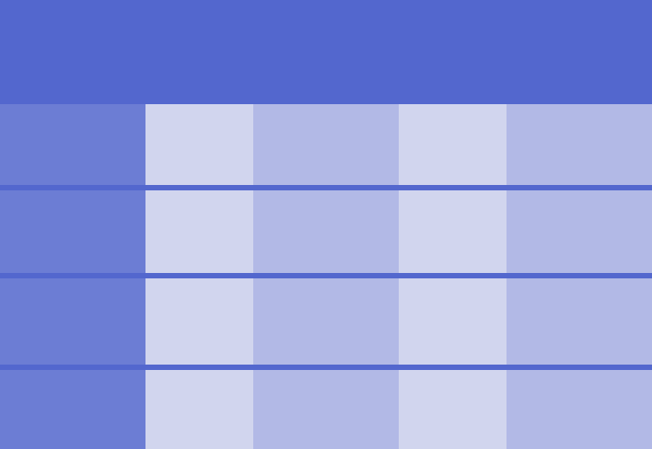
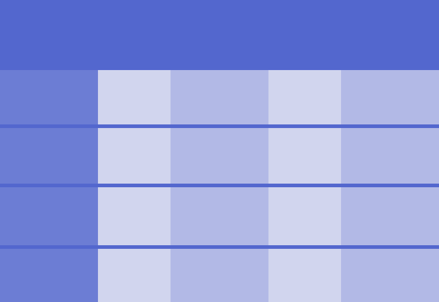
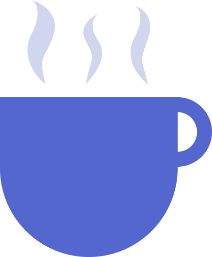
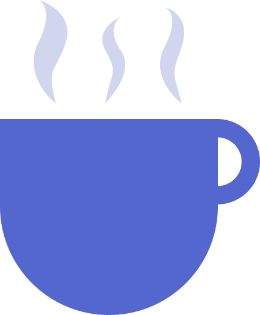
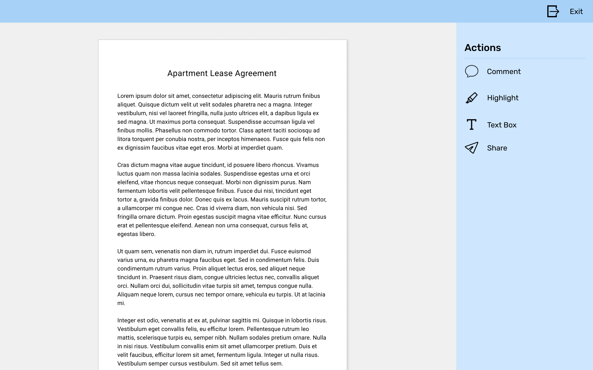
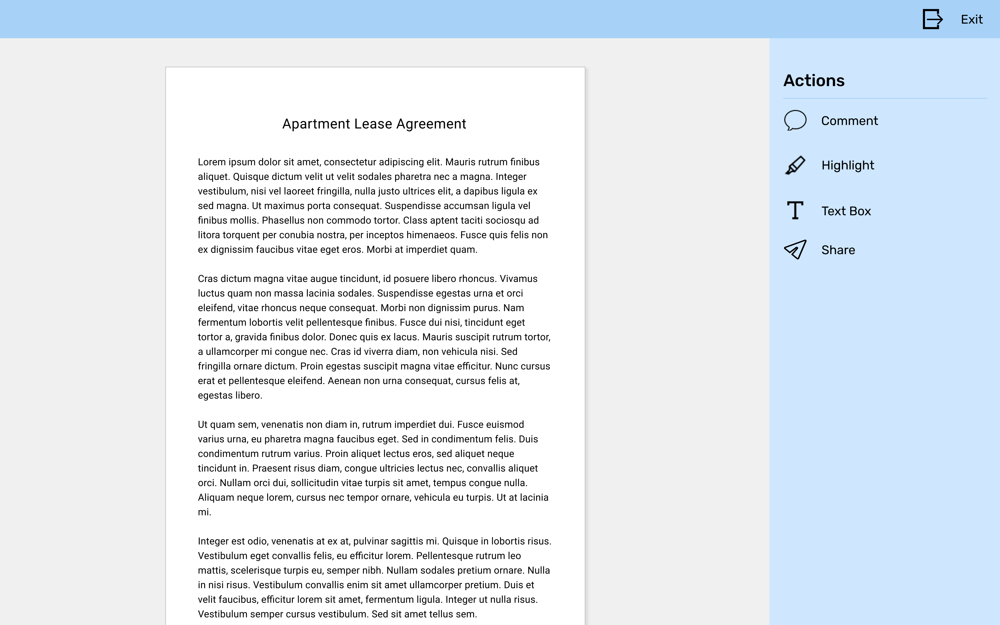

Archive
A digital file cabinet and notepad for your organizational needs.
View Prototype
About the project
The problemThis client saw an opportunity to join the cloud storage market but was unsure which direction they wanted to go.
The goal
With such ambiguity I needed to explore various niches within the cloud storage market and design an intuitive solution. ( This was a mock project from Bloc's immersive UX design course )
Project details
RoleUX/UI Designer - research, information architecture, branding, testing
Duration
2 months
Tools
Figma, Usability Hub, Google Suite
Deliverables
Web prototype: research, style guide, sketches, wireframes, mockups
 
  


 (Usability testing was performed with Maze.design)
(Usability testing was performed with Maze.design)
 
